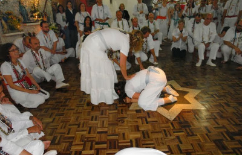
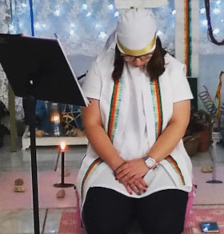

Sacerdote
É aquela pessoa que dirige os ritos e ordena o terreiro. Sua função é ensinar a doutrina umbandista para os discípulos, bem como tirar dúvidas e revelar segredos da religião.
Nos rituais, enquanto o médium está incorporando uma entidade, sua missão é conversar com as pessoas, a fim de que elas possam retirar suas angústias e sofrimentos tanto na parte carnal quanto espiritual.
 